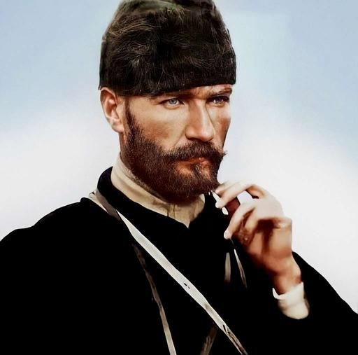
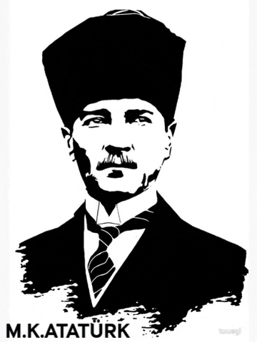

Trablusgarp / 1911–1912
Mustafa Kemal Atatürk
Bir ömür biter. Bir fikir kalır.

01 / Cumhuriyet
Her millet, icraatına tahammül ettiği hükümetin mesuliyetine ortaktır.
“Benim naçiz vücudum bir gün elbet toprak olacaktır. Fakat Türkiye Cumhuriyeti ilelebet payidar kalacaktır.”

02 / Görsel arşiv
Bir milletin
istikameti.
Cepheden Meclis’e,
bozkırdan halkın arasına—
aynı kararlılığın
farklı anları.
1881
193∞
Atatürk
Bir ömür biter. Bir fikir kalır.
Akıl
Bilim
İstiklal
Cumhuriyet